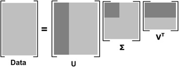

利用SVD简化数据
奇异值分解（singular value decomposition，SVD）
SVD的应用
奇异值分解
优点：简化数据，去除噪声，提高算法的结果
缺点：数据的转换可能难以理解
适用数据类型：数值型数据
利用SVD实现，我们能够用小得多的数据集来表示原始数据集。这样做，实际上是去除噪声和冗余信息。
隐性语义索引
SVD的应用之一就是信息检索。我们称利用SVD的方法为隐性语义索引（Latent Semantic Indexing，LSI）。
在LSI中，一个矩阵是由文档和词语组成的。当我们在该矩阵上应用SVD时，就会构建出多个奇异值。这些奇异值代表了文档中的概念或主题，这一特点可以用于更高效的文档搜索。在词语拼写错误时，只基于词语存在与否的简单搜索方法会遇到问题。简单搜索的另一个问题就是同义词的使用。
推荐系统
SVD的另一个应用就是推荐系统。简单版本的推荐系统能够计算项或人之间的相似度。更先进的方法则先利用SVD从数据中构建一个主题空间，然后再再该空间下计算相似度。
矩阵分解
SVD是矩阵分解的一种类型，矩阵分解是将数据矩阵分解为多个独立部分的过程。
SVD将原始的数据集矩阵Data分解成三个矩阵$U,\Sigma,V^T$。如果原始矩阵Data是m行n列，那么$U,\Sigma,V^T$分别是m行m列，m行n列，n行n列。上述过程可以写成下面结果：
$$Data_{m×n}=U_{m×m}\Sigma_{m×n}V^T_{n×n}$$
上述分解中会构建一个矩阵$\Sigma$，该矩阵只有对角元素，其他元素均为0。另一个惯例就是$\Sigma$的对角元素是从大到小排列的。这些对角元素称为奇异值（Singular Value），它们对应了原始数据矩阵Data的奇异值。奇异值和特征值是有关系的，这里的奇异值就是矩阵$Data*Data^T$特征值的平方根。
利用Python实现SVD
在numpy中提供了svd的实现1
2
3from numpy import *
U, Sigma, VT = linalg.svd([[1, 1], [7, 7]])
1 | U |
array([[-0.14142136, -0.98994949],
[-0.98994949, 0.14142136]])
1 | Sigma |
array([10., 0.])
1 | VT |
array([[-0.70710678, -0.70710678],
[-0.70710678, 0.70710678]])
注意到，矩阵Sigma以行向量array([10., 0.])返回，而非如下矩阵
array([[10, 0],
[ 0, 0]])
这是由于矩阵处理对角元素其他均为0，因此这种仅返回对角元素的方式能节省空间，我们需要知道Sigma是一个矩阵。
构建以下矩阵
1 | def loadExData(): |
1 | Data = loadExData() |
1 | U, Sigma, VT = linalg.svd(Data) |
1 | Sigma |
array([9.64365076e+00, 5.29150262e+00, 7.40623935e-16, 4.05103551e-16,
2.21838243e-32])
前三个数值比其他值大了很多，于是我们可以将最后两个数值去掉了。
接下来我们的原始数据集就可以用如下结果来近似
$$Data_{m×n}≈U_{m×3}\Sigma_{3×3}V^T_{3×n}$$

SVD示意图。矩阵Data被分解。浅灰色区域是原始数据，深灰色区域是矩阵近似计算仅需的数据
我们试图重构原始矩阵，首先构建一个3×3的矩阵Sig3
1 | Sig3 = mat([[Sigma[0], 0, 0], |
接下来重构原始矩阵的近似矩阵。由于Sig3仅为3×3的矩阵，因而我们只需要使用矩阵U的前3列和$V^T$的前3行。1
2data = U[:, :3]*Sig3*VT[:3, :]
data.astype('int')
matrix([[0, 0, 0, 2, 2],
[0, 0, 0, 3, 3],
[0, 0, 0, 1, 1],
[1, 1, 1, 0, 0],
[2, 2, 2, 0, 0],
[5, 5, 5, 0, 0],
[1, 1, 1, 0, 0]])
1 | Data |
[[0, 0, 0, 2, 2],
[0, 0, 0, 3, 3],
[0, 0, 0, 1, 1],
[1, 1, 1, 0, 0],
[2, 2, 2, 0, 0],
[5, 5, 5, 0, 0],
[1, 1, 1, 0, 0]]
通过SVD我们可以用一个小很多的矩阵来表示一个大矩阵。
基于协同过滤的推荐引擎
相似度计算
欧氏距离
皮尔逊相关系数（pearson correlation）
余弦相似度（cosine similarity）
相似度计算1
2
3
4
5
6
7
8
9
10
11
12
13
14
15from numpy import *
from numpy import linalg as la
def eulidSim(inA, inB):
return 1.0/(1.0+la.norm(inA - inB))
def pearsSim(inA, inB):
if len(inA) < 3:
return 1.0
return 0.5+0.5*corrcoef(inA, inB, rowvar=0)[0][1]
def cosSim(inA, inB):
num = float(inA.T * inB)
denom = la.norm(inA) * la.norm(inB)
return 0.5+0.5*(num/denom)
测试一下这三个函数1
myMat = mat(loadExData())
欧氏距离：1
ecludSim(myMat[:, 0], myMat[:, 4])
0.12973190755680383
1 | ecludSim(myMat[:, 0], myMat[:, 0]) |
1.0
余弦相似度1
cosSim(myMat[:, 0], myMat[:, 4])
0.5
1 | cosSim(myMat[:, 0], myMat[:, 0]) |
1.0
皮尔逊相关系数1
pearsSim(myMat[:, 0], myMat[:, 4])
0.20596538173840329
1 | pearsSim(myMat[:, 0], myMat[:, 0]) |
1.0
上面的相似度计算都是假设数据采用了列向量方式进行表示。如果利用上述函数来计算两个向量的相似度就会遇到问题（我们很容易对上述函数进行修改以计算行向量之间的相似度）。这里采用列向量的表示方法，暗示着我们将利用基于物品的相似度计算方法。
基于物品的相似度还是基于用户的相似度
我们计算了两个餐馆菜肴之间的距离，这称为基于物品（item-based）的相似度。另一种计算用户距离的方法称为基于用户（user-based）。基于物品相似度计算的时间会随着物品数量的增加而增加，基于用户的相似度计算时间则会随用户数量的增加而增加。
推荐引擎的评价
通常用于推荐引擎的评价指标称为最小均方根误差（Root Mean Squared Error，RMSE）的指标，它首先计算均方误差的平均值再取其平方根。
实例：餐馆菜肴推荐引擎
推荐未尝过的菜肴
- 寻找用户没有评级的菜肴，即在用户物品矩阵中的0值
- 在用户没有评级的所有物品中，对每个物品预计一个可能的评级分数。（我们认为用户可能对物品的打分）
- 对这些物品的评分从高到低排序，返回前N个物品
1
2
3
4
5
6
7
8
9
10
11
12
13
14
15
16
17
18
19
20
21
22
23
24
25
26
27
28
29
30def standEst(dataMat, user, simMeas, item):
n = shape(dataMat)[1]
simTotal = 0.0
ratSimTotal = 0.0
for j in range(n):
userRating = dataMat[user, j]
if userRating == 0:
continue
overLap = nonzero(logical_and(dataMat[:,item].A>0, dataMat[:,j].A>0))[0]
if len(overLap) == 0:
similarity = 0
else:
similarity = simMeas(dataMat[overLap,item], dataMat[overLap,j])
print('the %d and %d similarity is: %f' % (item, j, similarity))
simTotal += similarity
ratSimTotal += similarity * userRating
if simTotal == 0:
return 0
else:
return ratSimTotal/simTotal
def recommend(dataMat, user, N=3, simMeas=cosSim, estMethod=standEst):
unratedItems = nonzero(dataMat[user, :].A==0)[1]
if len(unratedItems) == 0:
return 'you rated everything'
itemScores = []
for item in unratedItems:
estimatedScore = estMethod(dataMat, user, simMeas, item)
itemScores.append((item, estimatedScore))
return sorted(itemScores, key=lambda jj: jj[1], reverse=True)[:N]
第一个函数standEst()用来计算给定相似度计算方法的条件下，用户对物品的评估分值。第二个函数recommend()也就是推荐引擎，他会调用standEst()函数。1
2
3myMat = mat(loadExData())
myMat[0, 1] = myMat[0, 0] = myMat[1, 0] = myMat[2, 0] = 4
myMat[3, 3] = 2
1 | myMat |
matrix([[4, 4, 0, 2, 2],
[4, 0, 0, 3, 3],
[4, 0, 0, 1, 1],
[1, 1, 1, 2, 0],
[2, 2, 2, 0, 0],
[5, 5, 5, 0, 0],
[1, 1, 1, 0, 0]])
1 | recommend(myMat, 2) |
the 1 and 0 similarity is: 1.000000
the 1 and 3 similarity is: 0.928746
the 1 and 4 similarity is: 1.000000
the 2 and 0 similarity is: 1.000000
the 2 and 3 similarity is: 1.000000
the 2 and 4 similarity is: 0.000000
[(2, 2.5), (1, 2.0243290220056256)]
1 | recommend(myMat, 2, simMeas=ecludSim) |
the 1 and 0 similarity is: 1.000000
the 1 and 3 similarity is: 0.309017
the 1 and 4 similarity is: 0.333333
the 2 and 0 similarity is: 1.000000
the 2 and 3 similarity is: 0.500000
the 2 and 4 similarity is: 0.000000
[(2, 3.0), (1, 2.8266504712098603)]
1 | recommend(myMat, 2, simMeas=pearsSim) |
the 1 and 0 similarity is: 1.000000
the 1 and 3 similarity is: 1.000000
the 1 and 4 similarity is: 1.000000
the 2 and 0 similarity is: 1.000000
the 2 and 3 similarity is: 1.000000
the 2 and 4 similarity is: 0.000000
[(2, 2.5), (1, 2.0)]
这个例子给出了如何利用基于物品相似度和多个相似度计算方法来进行推荐的过程。
利用SVD提高推荐效果
下面是一个更大的矩阵1
2
3
4
5
6
7
8
9
10
11
12def loadExData2():
return[[0, 0, 0, 0, 0, 4, 0, 0, 0, 0, 5],
[0, 0, 0, 3, 0, 4, 0, 0, 0, 0, 3],
[0, 0, 0, 0, 4, 0, 0, 1, 0, 4, 0],
[3, 3, 4, 0, 0, 0, 0, 2, 2, 0, 0],
[5, 4, 5, 0, 0, 0, 0, 5, 5, 0, 0],
[0, 0, 0, 0, 5, 0, 1, 0, 0, 5, 0],
[4, 3, 4, 0, 0, 0, 0, 5, 5, 0, 1],
[0, 0, 0, 4, 0, 4, 0, 0, 0, 0, 4],
[0, 0, 0, 2, 0, 2, 5, 0, 0, 1, 2],
[0, 0, 0, 0, 5, 0, 0, 0, 0, 4, 0],
[1, 0, 0, 0, 0, 0, 0, 1, 2, 0, 0]]
1 | U, Sigma, VT = la.svd(mat(loadExData2())) |
1 | Sigma |
array([15.77075346, 11.40670395, 11.03044558, 4.84639758, 3.09292055,
2.58097379, 1.00413543, 0.72817072, 0.43800353, 0.22082113,
0.07367823])
首先对Sigma中的值求平方1
Sig2 = Sigma**2
1 | sum(Sig2) |
541.9999999999995
在计算总能量的90%1
sum(Sig2)*0.9
487.7999999999996
然后计算前两个元素包含的能量1
sum(Sig2[:2])
378.8295595113579
该值低于总能量的90%，于是计算前三个元素所包含的能量1
sum(Sig2[:3])
500.50028912757926
该值高于90%，这就可以了。于是我们将一个11维的矩阵转换为一个3维的矩阵，下面对转换后的三维空间构造一个相似度计算函数。我们利用SVD将所有的菜肴映射到一个低维空间中去。1
2
3
4
5
6
7
8
9
10
11
12
13
14
15
16
17
18
19def svdEst(dataMat, user, simMeas, item):
n = shape(dataMat)[1]
simTotal = 0.0
ratSimTotal = 0.0
U,Sigma,VT = la.svd(dataMat)
Sig4 = mat(eye(4)*Sigma[:4])
xformedItems = dataMat.T * U[:,:4] * Sig4.I
for j in range(n):
userRating = dataMat[user, j]
if userRating == 0 or j==item:
continue
similarity = simMeas(xformedItems[item,:].T, xformedItems[j,:].T)
print('the %d and %d similarity is: %f' % (item, j, similarity))
simTotal += similarity
ratSimTotal += similarity * userRating
if simTotal == 0:
return 0
else:
return ratSimTotal/simTotal
1 | myMat = mat(loadExData2()) |
the 0 and 3 similarity is: 0.490950
the 0 and 5 similarity is: 0.484274
the 0 and 10 similarity is: 0.512755
the 1 and 3 similarity is: 0.491294
the 1 and 5 similarity is: 0.481516
the 1 and 10 similarity is: 0.509709
the 2 and 3 similarity is: 0.491573
the 2 and 5 similarity is: 0.482346
the 2 and 10 similarity is: 0.510584
the 4 and 3 similarity is: 0.450495
the 4 and 5 similarity is: 0.506795
the 4 and 10 similarity is: 0.512896
the 6 and 3 similarity is: 0.743699
the 6 and 5 similarity is: 0.468366
the 6 and 10 similarity is: 0.439465
the 7 and 3 similarity is: 0.482175
the 7 and 5 similarity is: 0.494716
the 7 and 10 similarity is: 0.524970
the 8 and 3 similarity is: 0.491307
the 8 and 5 similarity is: 0.491228
the 8 and 10 similarity is: 0.520290
the 9 and 3 similarity is: 0.522379
the 9 and 5 similarity is: 0.496130
the 9 and 10 similarity is: 0.493617
[(4, 3.344714938469228), (7, 3.329402072452697), (9, 3.328100876390069)]
尝试另一种方法1
recommend(myMat, 1, simMeas=pearsSim, estMethod=svdEst)
the 0 and 3 similarity is: 0.341942
the 0 and 5 similarity is: 0.124132
the 0 and 10 similarity is: 0.116698
the 1 and 3 similarity is: 0.345560
the 1 and 5 similarity is: 0.126456
the 1 and 10 similarity is: 0.118892
the 2 and 3 similarity is: 0.345149
the 2 and 5 similarity is: 0.126190
the 2 and 10 similarity is: 0.118640
the 4 and 3 similarity is: 0.450126
the 4 and 5 similarity is: 0.528504
the 4 and 10 similarity is: 0.544647
the 6 and 3 similarity is: 0.923822
the 6 and 5 similarity is: 0.724840
the 6 and 10 similarity is: 0.710896
the 7 and 3 similarity is: 0.319482
the 7 and 5 similarity is: 0.118324
the 7 and 10 similarity is: 0.113370
the 8 and 3 similarity is: 0.334910
the 8 and 5 similarity is: 0.119673
the 8 and 10 similarity is: 0.112497
the 9 and 3 similarity is: 0.566918
the 9 and 5 similarity is: 0.590049
the 9 and 10 similarity is: 0.602380
[(4, 3.346952186702173), (9, 3.3353796573274694), (6, 3.3071930278130366)]
实例：基于SVD的图像压缩
我们可以使用SVD来对数据降维，从而实现图像的压缩。1
2
3
4
5
6
7
8
9
10
11
12
13
14
15
16
17
18
19
20
21
22
23
24
25
26def printMat(inMat, thresh=0.8):
for i in range(32):
for k in range(32):
if float(inMat[i, k] > thresh):
print(1, end='')
else:
print(0, end='')
print('')
def imgCompress(numSV=3, thresh=0.8):
myl = []
for line in open('MLiA_SourceCode/Ch14/0_5.txt').readlines():
newRow = []
for i in range(32):
newRow.append(int(line[i]))
myl.append(newRow)
myMat = mat(myl)
print('***originam matrix*****')
printMat(myMat, thresh)
U, Sigma, VT = la.svd(myMat)
SigRecon = mat(zeros((numSV, numSV)))
for k in range(numSV):
SigRecon[k, k] = Sigma[k]
reconMat = U[:, :numSV] * SigRecon*VT[:numSV, :]
print("****reconstructed matrix using %d singular values******" % numSV)
printMat(reconMat, thresh)
1 | imgCompress(2) |
***originam matrix*****
00000000000000110000000000000000
00000000000011111100000000000000
00000000000111111110000000000000
00000000001111111111000000000000
00000000111111111111100000000000
00000001111111111111110000000000
00000000111111111111111000000000
00000000111111100001111100000000
00000001111111000001111100000000
00000011111100000000111100000000
00000011111100000000111110000000
00000011111100000000011110000000
00000011111100000000011110000000
00000001111110000000001111000000
00000011111110000000001111000000
00000011111100000000001111000000
00000001111100000000001111000000
00000011111100000000001111000000
00000001111100000000001111000000
00000001111100000000011111000000
00000000111110000000001111100000
00000000111110000000001111100000
00000000111110000000001111100000
00000000111110000000011111000000
00000000111110000000111111000000
00000000111111000001111110000000
00000000011111111111111110000000
00000000001111111111111110000000
00000000001111111111111110000000
00000000000111111111111000000000
00000000000011111111110000000000
00000000000000111111000000000000
****reconstructed matrix using 2 singular values******
00000000000000000000000000000000
00000000000000000000000000000000
00000000000001111100000000000000
00000000000011111111000000000000
00000000000111111111100000000000
00000000001111111111110000000000
00000000001111111111110000000000
00000000011110000000001000000000
00000000111100000000001100000000
00000000111100000000001110000000
00000000111100000000001110000000
00000000111100000000001110000000
00000000111100000000001110000000
00000000111100000000001110000000
00000000111100000000001110000000
00000000111100000000001110000000
00000000111100000000001110000000
00000000111100000000001110000000
00000000111100000000001110000000
00000000111100000000001110000000
00000000111100000000001110000000
00000000111100000000001110000000
00000000111100000000001110000000
00000000111100000000001110000000
00000000111100000000001110000000
00000000111100000000001100000000
00000000001111111111111000000000
00000000001111111111110000000000
00000000001111111111110000000000
00000000000011111111100000000000
00000000000011111111000000000000
00000000000000000000000000000000
可以看到，只需要两个奇异值就能相当精确的对图像实现重构。
总结
SVD是一种强大的降维工具，我们可以利用SVD来逼近矩阵并从中提取重要特征。通过保留矩阵80%~90%的能量，就可以得到重要的特征并去掉噪声。SVD已经运用到了多个应用中，其中一个成功的案例就是推荐引擎。
推荐引擎将物品推荐给用户，协调过滤则是一种基于用户喜好或行为数据的推荐实现方法。协调过滤的核心是相似度计算方法，很多相似度计算方法都可以用计算物品或用户之间的相似度。通过降低空间下计算相似度，SVD提高了推荐引擎的效果。
在大规模数据集上，SVD的计算和推荐可能是一个很困难的工程问题。通过离线方式来进行分解和相似度计算，是一种减少冗余计算和推荐所需时间的办法。